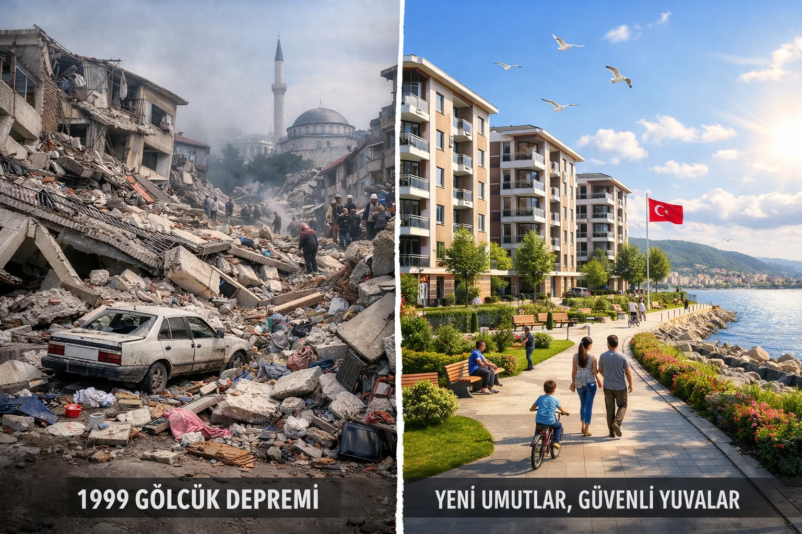

Marmara Depremi 1999 – 25 Yılda Ne Değişti?
17 Ağustos 1999 sabah 03:02. Mw 7.6 Gölcük depremi Türkiye'yi uyandırdı. 17 binden fazla can kaybı, 250 binden fazla bina hasarı. 25 yıl sonra, o depremin Türkiye'yi ne kadar değiştirdiğine bakalım.
1. Deprem Yönetmeliği: 1998 → 2007 → 2019
1998 yönetmeliği 1999 sonrası ciddi şekilde güncellendi. 2007 Deprem Yönetmeliği etken tasarım, yük değerlendirmesi ve dayanım hesaplamalarını modernize etti. 2019 Türkiye Bina Deprem Yönetmeliği (TBDY) ise Avrupa Eurocode 8 standartlarına yaklaştı. Yeni yapımlarda spektral değer, performans analizi zorunlu.
2. DASK: Zorunlu Deprem Sigortası Kuruldu
27 Aralık 1999'da DASK (Doğal Afet Sigortaları Kurumu) kuruldu. 2000'den itibaren tüm tapulu konutlar için zorunlu hale geldi. 2023 Kahramanmaraş depremlerinde DASK 250 milyar TL tazminat ödedi. Detaylı DASK rehberimiz burada.
3. AFAD Kuruluşu (2009)
Eski dağınık afet yönetimi (Kızılay, Sivil Savunma, Turkey Emergency) 2009'da AFAD (Afet ve Acil Durum Yönetimi Başkanlığı) adıyla birleştirildi. Bugün 81 il müdürlüğü var, 10.000+ personel, düzenli tatbikatlar ve erken uyarı sistemi kurulum süreci.
4. Kentsel Dönüşüm Yasası (2012)
6306 sayılı kanun "Riskli Alanların Dönüştürülmesi" — deprem riskli yapı stoku ile başa çıkma mekanizması. Riskli bina raporu çıkarılırsa 60 gün içinde boşaltma, güçlendirme veya yıkım zorunlu. 2026 itibarıyla 3.5 milyon riskli bina dönüştürüldü.
5. Okul Eğitimi ve Tatbikatlar
1999 sonrası tüm okullarda yıllık deprem tatbikatları zorunlu. Çocuklar çök-kapan-tutun hareketini ilkokulda öğrenir. AFAD'ın "Sıfır Afet Okulu" programı ile 20 milyon öğrenciye ulaşıldı.
6. Bilimsel Araştırma Yatırımı
TÜBİTAK MAM (Marmara Araştırma Merkezi), Boğaziçi Kandilli, Gebze Teknik Üniversitesi, İstanbul Teknik Üniversitesi deprem araştırma merkezlerine büyük yatırımlar yapıldı. GPS ölçüm ağı, sismograf istasyonları 10x arttı.
7. Erken Uyarı Sistemi Başlangıcı
Japonya modelinde erken uyarı sistemi pilot olarak İstanbul'da 2009'da başladı. 2023'te tam sistem devreye girdi — detaylı bilgi burada.
8. Kamu Binalarında Güçlendirme
1999 sonrası tüm hastane, okul, belediye, idari binaların deprem güçlendirmesi zorunlu hale geldi. 2026 itibarıyla %90 tamamlandı. Bu, acil durum sonrası kamu hizmetlerinin süreklilik kazanmasını sağlıyor.
9. Yeni İmar Planları ve Zemin Etüdü
1999 öncesi imar planları zemin etüdü içermezdi. Şimdi her parsel için jeolojik-jeoteknik etüt zorunlu. Alüvyon ve dere yatağı bölgelerinde yüksek kat yapılaşma yasaklandı.
10. Bireysel Farkındalık
En önemli değişim bireysel hazırlıkta. 1999'da deprem çantası, tatbikat, toplanma alanı bilmek azdı. Bugün 1 milyondan fazla Türk aile düzenli tatbikat yapıyor. Bizim 81 il sayfamız gibi kaynaklarla bilinç her yıl yükseliyor.